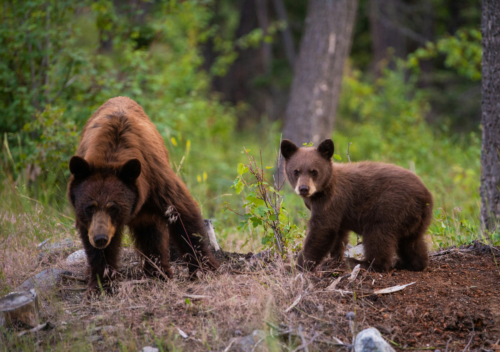

Zoo
ANIMALS
Bears
- Ollie
- Mona
Bears, a small group of mostly large omnivorous mammals, can be found
all over the world. They live in forests, mountains, tundra, deserts
and grassy areas. Though there are different types of bear, all bear
species have similarities. They all have stocky, fur-covered bodies,
short legs, and a round head with a long snout. There are eight species
of bear: American black bear, Asiatic black bear, brown bear, giant
panda bear, polar bear, spectacled bear, sloth bear and sun bear.
Giraffes

- Frankie
- Coconut
Giraffes, (genus Giraffa) are long-necked, cud-chewing, hoofed
mammals of Africa, with long legs and a coat pattern of irregular
brown patches on a light background. Giraffes are the tallest of
all land animals; males (bulls) may exceed 5.5 metres (18 feet)
in height, and the tallest females (cows) are about 4.5 metres.
Using prehensile tongues almost half a metre long, they are
able to browse foliage almost six metres from the ground.
Lions

- Mella
- Karl
Lion, (Panthera leo), is a large, powerfully built cat (family Felidae)
that is second in size only to the tiger. They are most active at night
and live in a variety of habitats but prefer grassland, savanna, dense
scrub, and open woodland. Historically, they ranged across much of
Europe, Asia, and Africa, but now they are found mainly in parts of
Africa south of the Sahara.
Monkeys

- Cookie
- Earl
- Banana Pudding
Monkeys are a large and diverse mammal group that includes most
primates. Humans, chimpanzees (Pan troglodytes) and other apes
share an ancestor with monkeys but belong to a separate group of
primates that diverged from monkeys millions of years ago. Monkeys
are typically smaller than apes and usually have tails, which apes
lack.
Alligators

- Wren
- Aspen
- Mika
American alligators are large crocodilians found only in the
United States. They can grow to be more than 12 feet (3.6 meters)
in length and weigh as much as 1,000 pounds (450 kilograms), with
males being slightly larger than females on average. The animal's
dark skin is armored with small, bony scales called scutes.